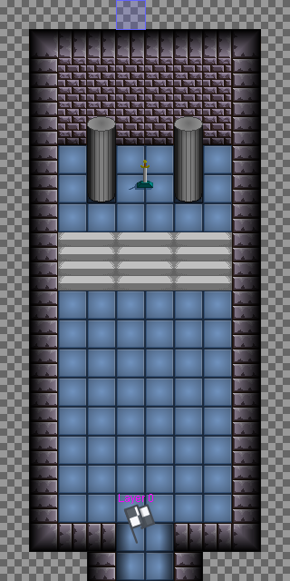
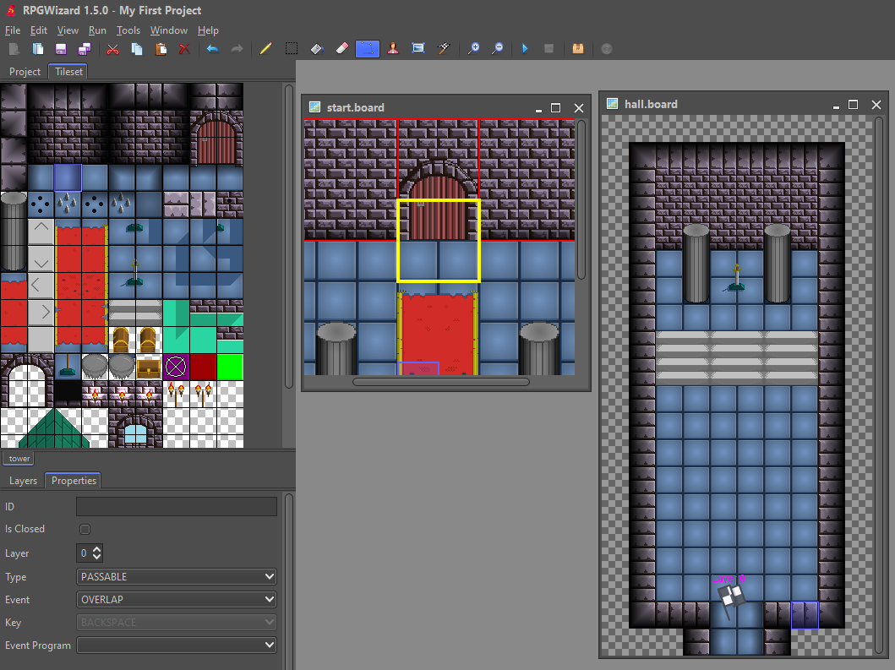
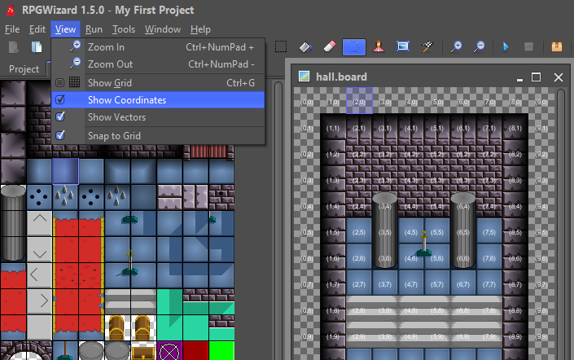
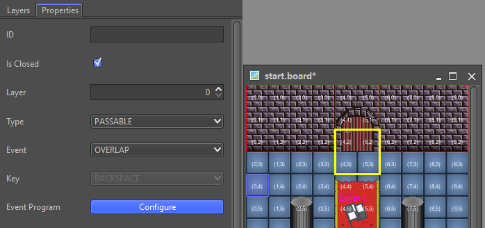
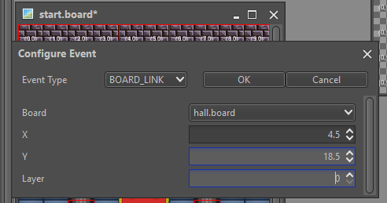

Summary
In this part of the tutorial we will connect 2 boards together using an activation vector. Connected boards are those that a character travel between, up until now we have only had a single board to walk around on. By the end of this part of the tutorial we will have a pair of boards that the character can move between.
Steps
Start by using everything that you have learned up until this point to create a new board that looks something like the one below and then save it with the name "hall.board":

Passable Vectors
Now draw a closed vector around the door area, when you have finished drawing goto "Properties" ensure it is closed and change the type to "PASSABLE". The vector should then immediately change to a yellow colour, this tells use that it is a passable vector, meaning the character can walk through it. Passable vectors are useful for triggering events when character collides with them.

When sending a character between boards it is useful to know the exact tile coordinates that we want to have them appear at. We can get this information by enabling coordinates viewing on the board editor by going to View > Show Coordinates. Tile coordinates start from the top left, which might seem counter intuitive but this is how computer screens work in general.

Creating a Board Link Event
If you start up the game and walk towards the door you'll notice that absolutely nothing happens when you pass through the vector. This is because there is no event program associated with it yet that tells it to send you to the other board. To achieve we need to configure the event associated with the vector's properties.

When you click the "Configure" button you will be presented with a small dialog, in the "Event Type" drop-down select "BOARD_LINK", now set the values to:
- Board: hall.board
- X: 4.5
- Y: 18.5
- Layer: 0
When you click OK this will generate a small event program that will send the player to the "hall.board" to the exact coordinates that you provided.

If you start the game again and walk towards the door the event will trigger and you will arrive in the hall.
Challenge
Try and add a link back from the hall board to your first board using another activation vector. Remember to look at the coordinates on your first board and try to pick one outside of the activation vector on that board.